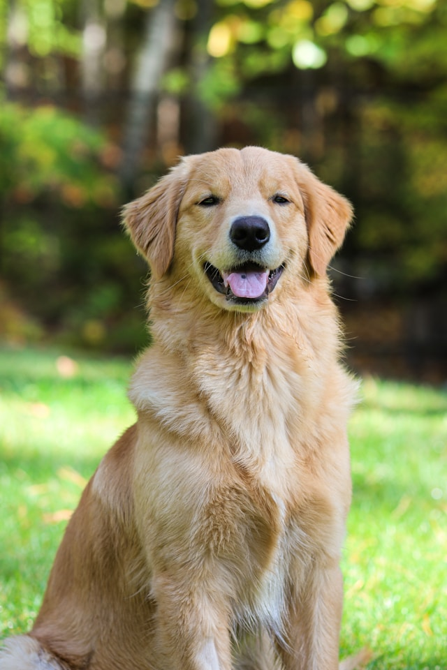

I didn't want to fit in the stereo of dog's being the Favorite animal, however, golden retrievers are my favourite animals
Golden retrievers are like that bestfriend who rarely have mood swings. They're great with kids and very affectionate towards humans. let's be honest they're gorgeous!
with their gold shiny body, fluffy hairs, fury body. It makes the cute and irresistible. They don’t tend to be shy or aggressive toward strangers and happily make friends wherever they go.
Here's a link to a wikipedia page with more information on Golden Retrievers WIKIPEDIA